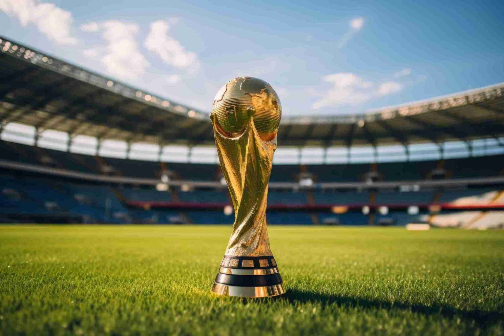
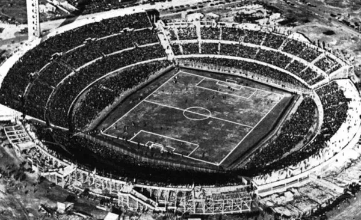
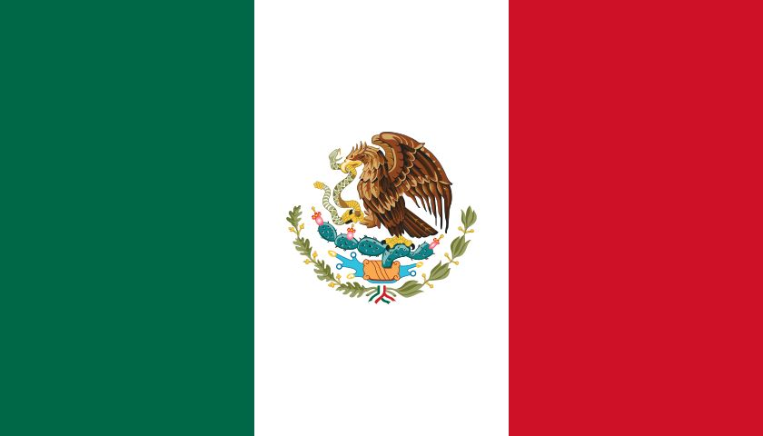

Bem-vindo ao site da Copa do Mundo
Explore informações sobre as copas do mundo oficiais, com páginas dedicadas para cada ano em que o torneio foi realizado.
Explore informações sobre as copas do mundo oficiais, com páginas dedicadas para cada ano em que o torneio foi realizado.

A Copa do Mundo FIFA é a maior competição de futebol entre seleções nacionais do mundo. O torneio foi criado pela FIFA e sua primeira edição ocorreu em 1930, no Uruguai. Desde então, a competição é realizada a cada quatro anos (com exceção dos períodos da Segunda Guerra Mundial, quando as edições de 1942 e 1946 foram canceladas).
A primeira Copa contou com apenas 13 seleções participantes. Ao longo das décadas, o torneio cresceu e se tornou um dos eventos esportivos mais assistidos do planeta, reunindo bilhões de espectadores. Atualmente, a competição conta com 48 seleções participantes.
O Brasil é a seleção com mais títulos mundiais, tendo conquistado cinco Copas do Mundo.
A história da Copa do Mundo começou há quase um século. O evento é uma criação do francês Jules Rimet, ex-presidente da FIFA, que em 1928 instituiu a primeira edição para ser realizada dois anos depois, em 1930.

A primeira Copa do Mundo foi sediada no Uruguai, em homenagem ao país que havia conquistado o bicampeonato olímpico no futebol, em 1924 e 1928, e que comemorava o centenário da sua independência.

Estados Unidos

Canadá

México
Pela primeira vez na história, a organização do maior torneio de futebol do planeta será dividida entre três países - Canadá, México e EUA - com 16 cidades no total sediando partidas. A Copa do Mundo de 2026 voltará a ser disputada no período tradicional, entre os meses de junho e julho. A data final da Copa do Mundo foi definida para domingo, 19 de julho, com a partida de abertura marcada para quinta-feira, 11 de junho.